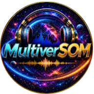

🚗 Paixões & Conquistas
Homenagem com Clipe Profissional
Quando uma paixão merece virar arte — com imagens de drone e trilha sonora original.

por Sérgio Melo
"Do coração pro mundo"
O que fazemos
Cada composição de Sérgio Melo é construída sobre esses valores — antes mesmo da produção de estúdio entrar em cena.
Cada palavra é escolhida a dedo. A história é real, o sentimento é genuíno.
A melodia é criada e cantada por Sérgio antes de qualquer tecnologia.
O rigor do processo de testes e iterações interpreta o que o artista já criou — amplificando, não substituindo.
Músicas que as pessoas guardam, compartilham e se emocionam para sempre.
Portfólio em destaque
Cada vídeo abaixo representa uma história única — uma paixão, um amor, uma turma, uma família.
🚗 Paixões & Conquistas
Quando uma paixão merece virar arte — com imagens de drone e trilha sonora original.

💜 Amor & Parceria
Para quem você dedicaria uma música? Esta foi feita para homenagear a pessoa amada.

👨👩👧👦 Família & Afeto
Porque família é o multiverso mais importante. Uma música que abraça quem mais importa.